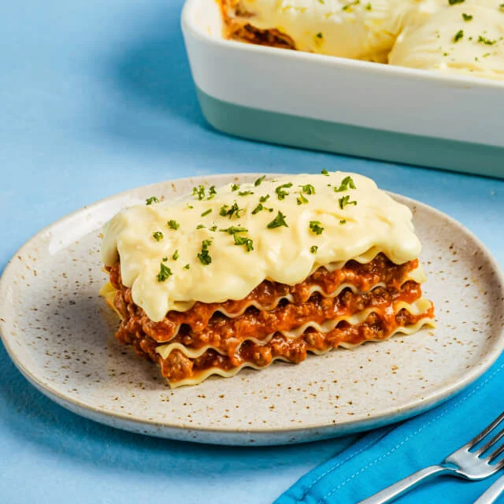

Lasagna

Description
Deliciously creamy layers of pasta, meats & Eden Meltsarap cheese that makes a great meal idea on the weekend to treat the family.
Ingredients
- Cheese
- Lasagna Noodles
- Onion
- Ground Beef
- Garlic
- Tomato Sauce
- Salt and Pepper
- Butter
- Milk
- Egg
Steps
- Preheat the oven to 350°F. Brown ground meat in a large skillet on medium heat and stir occasionally. Mix spaghetti sauce into meat mixture.
- Spread 1 cup of meat sauce onto the bottom of a small to medium-sized baking dish and top with lasagna noodles until the layer is full.
- Spread half of the cheese mixture over the noodles.
- Repeat meat sauce, noodles, and cheese layers once. Top with remaining noodles and meat sauce. Make sure to cover noodles with sauce. Sprinkle the remaining 1/2 cup of Eden Melt Sarap on top. Cover with foil.
- Bake for 45 minutes. Remove foil. Bake for 15 minutes or until noodles are tender and cheese is golden brown. Let stand for another 15 minutes before cutting.